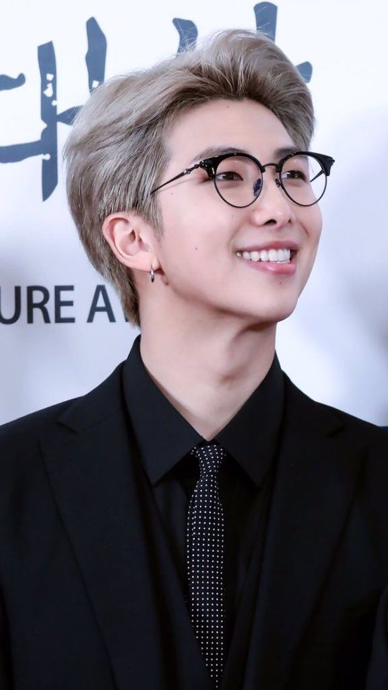
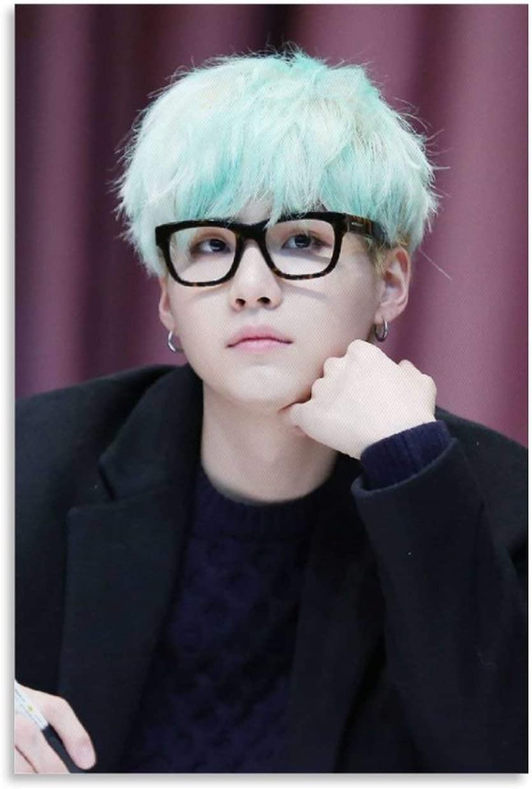
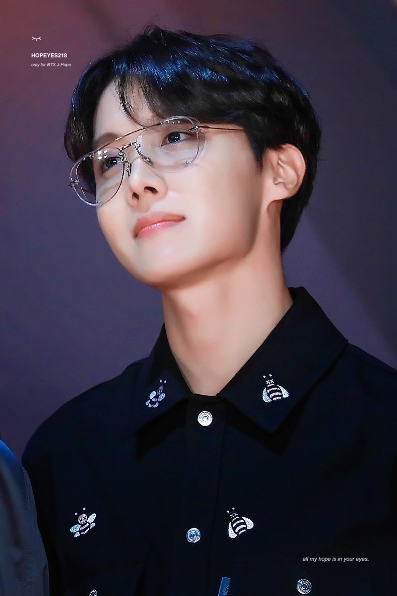

-

KIM NAM JOON
Rap Monster aka Kim Nam Joon, is a South Korean rapper, songwriter, and record producer. He was born on September 12, 1994, in Ilsan-gu, Goyang, South Korea. RM is best known as the leader of the global sensation K-pop group BTS.
@rm -
KIM SOEK JIN
Jin, whose real name is Kim Seok-jin,is known for his beautiful singing voice, impressive visuals, and his humorous personality, which has earned him the nickname "Worldwide Handsome."
@jin -

MIN YOONGI
Suga, whose real name is Min Yoongi, is a rapper and songwriter in BTS known for his deep, introspective lyrics and versatile production skills.
@suga -

JUNG HOSEOK
J-Hope, whose real name is Jung Hoseok, is a rapper, dancer, and songwriter known for his upbeat energy and dynamic dance skills.
@hobi -
PARK JIMIN
Jimin is known for his smooth vocals, powerful dance moves, and charming personality, which has earned him a large following of fans around the world.
@jimin -
KIM TAEHYUNG
V, whose real name is Kim Taehyung, is a vocalist in BTS known for his unique vocal color, charming personality, and love of art and photography.
@v -
JEON JUNGKOOK
Jungkook, whose real name is Jeon Jungkook, is a singer, dancer, and songwriter in BTS known for his powerful vocals, impressive dance skills, and all-around talent.
@kookie